Categorization and Ingredients Recognition
for Chinese Food
Chenhao Wang, Mengfan Wang, Yao Xiao, Yuxian YeFall 2017 ECE 5554/4554 Computer Vision: Class Project
Virginia Tech
Abstract
Chinese food is difficult to be categorized, especially its ingredients. Combing food categorization and ingredients recognition is regarded as a useful method to improve the accuracy. In this project, we modified the architecture of two CNN models, VGG16 and Resnet152, to implement the multiple outputs task, and compared their performance.Key words: Chinese food, food categorization, ingredients recognition, VGG, Resnet.
Introduction
Chinese food and it's ingredients are hard to be recognized for several reasons. Firstly, some ingredients are difficult to be recognized, for example, ingredients under soup or sauce. Secondly, they are invisible in flour-made food categories such as dumplings and noodles. Thirdly, many ingredients exhibit large visual variations due to different ways of cutting and cooking. For example, Figure 1 shows six dishes of Chinese food all with pork, though they look totally different. Hence, combing food categorization and ingredients recognition is regarded as a useful method to improve the accuracy. Figure 1: Different dishes of Chinese food all with pork.
Figure 1: Different dishes of Chinese food all with pork.
Approach
Dataset: Vireo 172
Chen J. and her group [1] constructed a Chinese food database: Vireo 172, consisting of 172 categories of food and 110,000 images. It also contains 353 different ingredients labels for each image. All the images in the dataset were crawled from Baidu and Google image search. The names of food categories, were issued as keywords in Chinese to search engines, and 1,300 images are crawled per food category. Figure 2 shows a part of food categories and the corresponding images.
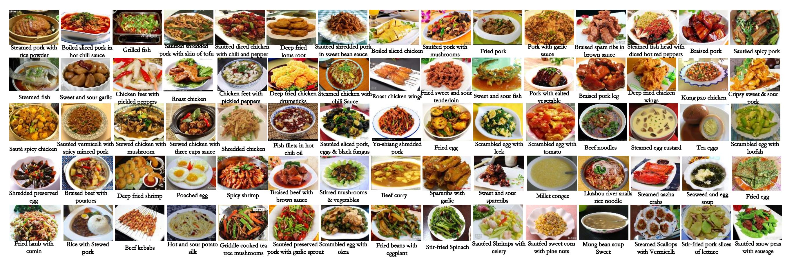
Figure 2: 75 kinds of food categories and the corresponding image.
Figure 2: 75 kinds of food categories and the corresponding image.
CNN Model Architecture Design
Two CNN models, VGG16[3] and Resnet152[4], are implemented and compared. It's a multiple outputs task because of the combination of food categorization and ingredients recognition. As a result, the original architecture of VGG16 and Resnet152 need to be modified to apply this case. In terms of design, the major modification is made on the fully connected layers. For VGG16, the two tasks share the first fc layer and own two privately layers. There are 4,096 neurons for food categorization, and 1024 neurons for ingredient[1]. For Resnet152, because there is only one fc layer, the two outputs are connected to the convolution layers (and avg pool) directly[2].
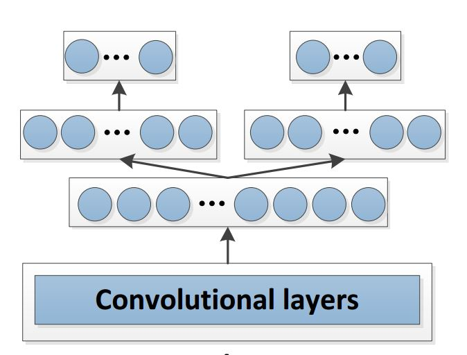

Figure 3: The modified architecture of VGG16 and Resnet152.
Figure 3: The modified architecture of VGG16 and Resnet152.
Loss Function
Relatively, the loss function need to be modified to apply multiple tasks.For food categorization, the multinomial logistic loss function is used and defined as 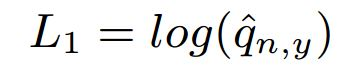, while 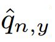 is the predicted score of an image n for its ground-truth food label y. is obtained from softmax activation function, so 0 < < 1. As a result, L1's value is less than 0. The bigger L1's absolute value is, the less probability a image is corresponding to this label. Log function is used for a quicker convergence.
For ingredients recognition, the cross-entropy loss function is used and defined as 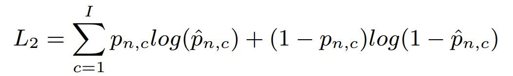, while 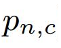 is a vector contains 0 and 1 in 353 dimensions, as the ground-truth ingredients for an image n. 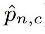 denotes the probability of having ingredient category c for an image n, obtained through sigmoid activation function. So is also between 0 and 1. Similar to L1, L2 is always below 0, and the lower its absolute value is, the closer it's to the ground-truth.
The overall loss function is defined as 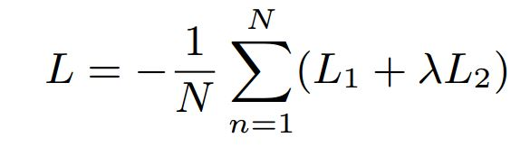, combing L1 and L2. 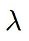 is a parameter used to adjust the importance of food categorization and ingredients recognition. Higher represents ingredients recognition takes a more importance place in the overall loss function. The best performance is gotten when = 0.2 in the practice.
Results
Interestingly, VGG16 and Resent152 offer different advantages in different aspects.Evaluation Method
For food categorization, because the ground-truth is a single label, Top-1 and Top-5 accuracy are enough to evaluate the two models. Nevertheless, for ingredients recognition, the ground-truth is a vector in 353 dimensions so that Top-1 or Top-5 accuracy are useless. Each image contains 3 ingredients in average, in which case the ground-truth is almost all zero. Even a model can't recognize any ingredients of a image, the accuracies are still quite high. Macro F1 value and micro F1 value are proposed to evaluate ingredients recognition[5]. Macro value is defined as 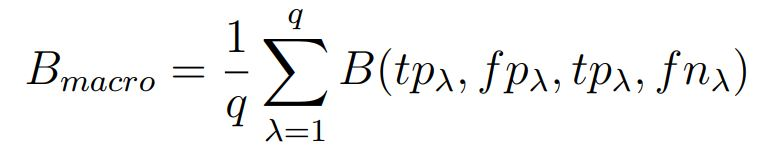. Macro precision and macro recall are the average of each image's precision and recall. Macro F1 value is the harmonic mean of macro precision and recall. Micro value is defined as 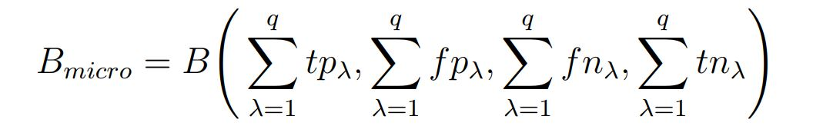. Micro precision is that sum of TP and FP divided by sum of TP. Micro recall is that sum of TP and FN divided by sum of TP. Micro F1 value is the harmonic mean of micro precision and recall.Convergence Speed
VGG16 has a better performance in training time and convergence speed. Figure 4 and 5 show the the two models' performance in each epoch: loss function value, food categorization's accuracy, ingredients recognition's macro and micro F1 value, from left to right. On one hand, VGG16's results converge in ten epochs, and get the best result when the 6th epoch. On the other hand, Resnet's results converge over thirty epochs. For each epoch, Resnet152 seems need more time than VGG16. As a result, VGG16's results converge much more quickly than Resnet152.
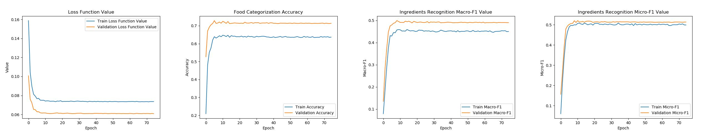
Figure 4: VGG16's performance in each epoch. 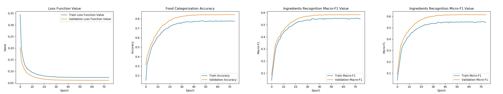
Figure 5: Resnet's performance in each epoch.
Figure 4: VGG16's performance in each epoch. 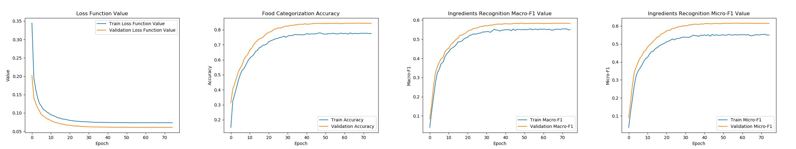
Figure 5: Resnet's performance in each epoch.
Performance
Table 1 shows results of the two models. For VGG16, the results are not as good as implemented in [1] though the same architecture and loss function are used. One possible reason is some parameters (such as ) are not best. Resnet152 has a better performance than VGG16 in all evaluation methods. Scores are improved about 10% in average.
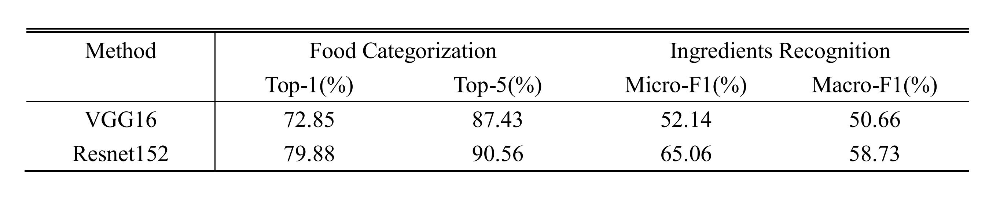
Table 1: Performance of VGG16 and Resnet152.
Table 1: Performance of VGG16 and Resnet152.
Exhibition
Figure 6 shows some results of Resent152. P represents predict (the output) and R represents real (the ground-truth). For food categorization (image 1), there is a error that Yu-Shiang shredded pork is regarded as auteed squid tentacles. However it could really be auteed squid tentacles in human's eyes because they are very similar. For ingredients recognition, some ingredients are really confusing, such as shredded pig ears in image 2 and white sesame in image 3. It's scarcely possible for human to distinguish the two ingredients.
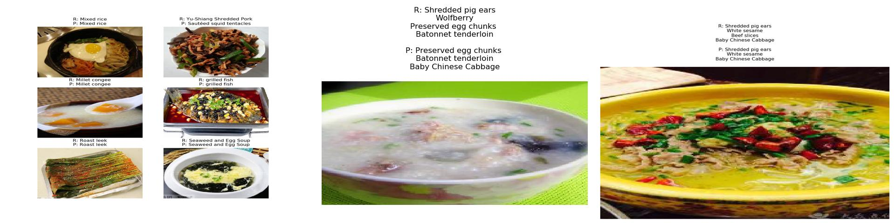
Figure 6: Some results of food categorization and ingredients recognition.
Figure 6: Some results of food categorization and ingredients recognition.
Conclusion
We have implemented two CNN models, VGG16 and Resnet152, for Chinese food's categorization and its ingredients recognition, and compared their performance. A dataset, Vireo 172, is used to train and test the models. Models' architectures are modified to adapt to the multiple outputs task. Loss function also combines two outputs. The models have different advantages. VGG16 converges more quickly, which is suited to get results as soon as possible. Resent152 has a better performance in all aspects, suited to get better results. However, food categorization, especially ingredients recognition, is a confusing and difficult task for both computers and humans. There is a long way to go.References
[1] Chen, J., & Ngo, C. W. (2016, October). Deep-based ingredient recognition for cooking recipe retrieval. In Proceedings of the 2016 ACM on Multimedia Conference (pp. 32-41). ACM.[2] Salvador, A., Hynes, N., Aytar, Y., Marin, J., Ofli, F., Weber, I., & Torralba, A. (2017). Learning cross-modal embeddings for cooking recipes and food images. In CVPR , (pp. 619-508).
[3] Simonyan, K., & Zisserman, A. (2014). Very deep convolutional networks for large-scale image recognition. arXiv preprint arXiv:1409.1556.
[4] He, K., Zhang, X., Ren, S., & Sun, J. (2016). Deep residual learning for image recognition. In CVPR (pp. 770-778).
[5] Van Asch, V. (2013). Macro-and micro-averaged evaluation measures [[basic draft]].
GitHub link: https://github.com/wang120332076/cv_project